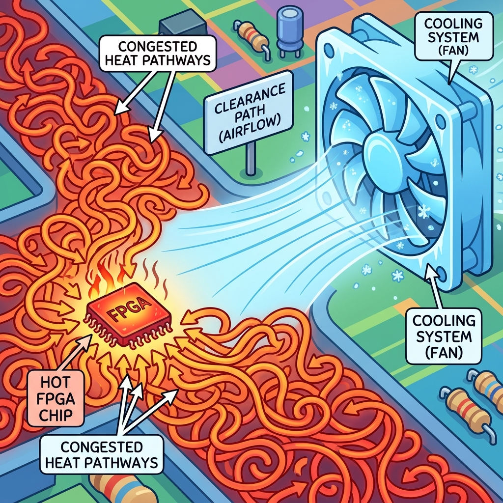
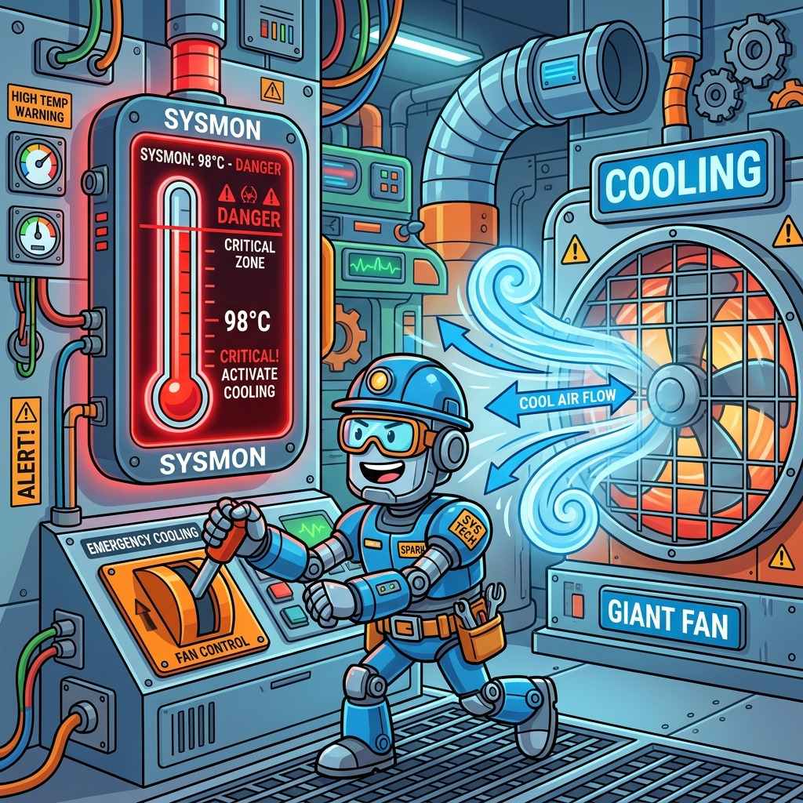

Section 5.2: Thermal Design and Cooling: The Heat Sink Hero
You’ve optimized your power, but you can’t eliminate it entirely. Every watt of power consumed by your FPGA is converted directly into heat. If that heat isn't removed, the internal temperature of the chip will rise until it reaches the Thermal Shutdown limit. At that point, the chip will turn itself off to prevent permanent damage. If you're lucky, it just restarts. If you're unlucky, the thermal stress causes a "latch-up" that destroys the silicon.
In the AMD UltraFast Methodology, thermal design is about managing the journey of heat from the tiny transistors (the Junction) to the outside air. It’s a race against physics, and your primary weapon is the Heat Sink Hero.
Junction Temperature (Tj): The Danger Zone
The most important number in your thermal design is the Junction Temperature (\(T_j\)). This is the temperature of the actual silicon inside the package. Most AMD FPGAs have a maximum \(T_j\) of 85°C (Commercial) or 100°C (Industrial).
Think of \(T_j\) as your chip's "Internal Fever." If the fever gets too high, the chip starts acting erratically. Timing paths fail, bits flip randomly, and eventually, the whole system crashes. Your cooling system’s only goal is to keep \(T_j\) comfortably below the limit, even on the hottest day of the year.
Brain Power If the air inside your chassis is 40°C, and your heat sink keeps the chip at 60°C, what is your 'Thermal Margin'? Why does this margin shrink as the FPGA utilization increases?
Thermal Resistance: The Traffic Jam for Heat
Heat doesn't just "disappear." it has to flow through multiple layers of material: the silicon, the package, the thermal paste, and finally the heat sink. Each of these materials has a Thermal Resistance (\(\theta\)), measured in °C per Watt.
Think of thermal resistance like a traffic jam on the way to the airport. If the resistance is high, the heat gets backed up inside the chip, and \(T_j\) skyrockets. To keep the chip cool, you need to minimize the resistance at every step. This means using high-quality thermal interface material (TIM) and a heat sink with plenty of surface area.

Fireside Chat: The Fan and the Heatsink
Heatsink: "I’m the heavy lifter. I’ve got twenty fins and a massive copper base. I can absorb ten watts of heat without even breaking a sweat. I’m the foundation of this system."
Fan: "That’s cute, but without me, you’re just a hot piece of metal. You can absorb heat, but you can't get rid of it. The air around your fins gets hot and stays there. I’m the one who brings in the fresh, cool air and carries the heat away."
Heatsink: "I don't like moving parts. They're noisy and they fail. I’d rather just be bigger."
Fan: "You don't have the room to be bigger! The chassis is tiny. If you want this FPGA to survive, you need my airflow. Together, we’re a 'Thermal Solution.' Separately, we’re just a future service call."
Cooling Strategies: Passive vs. Active
There are two main ways to keep an FPGA cool:
- Passive Cooling: Using a heatsink and natural convection (no fan). This is quiet and reliable, but it only works for low-power designs.
- Active Cooling: Using a fan to force air across the heatsink. This can handle much higher power but adds noise and a potential point of failure.
In some extreme cases (like high-end Alveo cards used in data centers), even a fan isn't enough. You might need Liquid Cooling, where a special fluid carries the heat away to a remote radiator. Choose the strategy that fits your power budget and your environment.
Thermal Monitoring: The SysMon
How do you know if your cooling system is working? You use the SysMon (System Monitor). This is a dedicated piece of hardware inside the FPGA that includes a temperature sensor.
You can read the SysMon through JTAG or through your own HDL logic. The UltraFast methodology recommends setting up Thermal Alarms. If the chip reaches 75°C, have your logic send a warning. If it reaches 85°C, have it go into a low-power "Sleep Mode" or shut down entirely. Don't fly blind—watch the SysMon and stay out of the danger zone.

Code Detective: The Sleep Mode logic
You can use the SysMon's OT (Over-Temperature) output to trigger a safety shutdown in your code.
// Code Detective: Why is this shutdown logic dangerous?
always @(posedge clk) begin
if (sysmon_ot) begin
logic_reset <= 1'b1; // Stop all switching to save power
end else begin
logic_reset <= 1'b0;
end
end
// Hint: What happens if the clock itself is what's generating the heat?
The flaw here is that the shutdown logic depends on the system clock. If the FPGA is so hot that the clock distribution network is failing, this always block will never execute.
There is a second flaw that bites far more often than the first: this logic holds
logic_reset high only while sysmon_ot is high. As soon as the die cools by a fraction
of a degree, the reset releases, the design starts switching again, the die heats up, and
you get thermal oscillation — a system that alternately runs and resets, forever, at
whatever frequency the thermal mass dictates. No hysteresis, no latch.
The fix has three parts, and the third is the one that keeps the board alive:
// Corrected: latched, hysteretic, and with a path that does not need the fabric.
module thermal_guard (
input logic clk,
input logic rst_n,
input logic sysmon_ot, // hard-block over-temperature, asynchronous
input logic sysmon_alm_temp, // hard-block user-temperature alarm
input logic clear_fault, // explicit software clear - NOT automatic
output logic throttle, // reduces activity: gate clocks, drop clock rate
output logic fault_latched // sticky, readable by software after the event
);
// 1. LATCH the event. It must survive the die cooling down, or nobody ever
// learns why the board reset itself at 3am.
always_ff @(posedge clk) begin
if (!rst_n) fault_latched <= 1'b0;
else if (sysmon_ot) fault_latched <= 1'b1;
else if (clear_fault) fault_latched <= 1'b0;
end
// 2. HYSTERESIS. Throttle on the OT alarm; keep throttling until the die has
// fallen back below the (lower) user-temperature threshold. SYSMON's alarm
// registers implement this in hardware if you program both limits - which is
// why you configure a warning threshold and a critical threshold, not one.
logic throttling;
always_ff @(posedge clk) begin
if (!rst_n) throttling <= 1'b0;
else if (sysmon_ot) throttling <= 1'b1;
else if (!sysmon_alm_temp) throttling <= 1'b0; // cooled past the LOW limit
end
// 3. The path that does not depend on this module running at all.
// OT is driven by the hard block. Combine it directly so a wedged fabric,
// a stopped clock or a hung state machine cannot mask a real event.
assign throttle = throttling | sysmon_ot;
endmodule
And the part that is not RTL at all: the device's own last-resort protection does not
need your design. SYSMON's OT output can be routed to a package pin and wired to your
power sequencer, so the board can remove power without the FPGA's cooperation. Configure
the hard block's shutdown behaviour deliberately:
# Automatic power-down on over-temperature, handled by the hard block itself.
# This is the protection that works when your design is the thing that is broken.
set_property BITSTREAM.CONFIG.OVERTEMPPOWERDOWN ENABLE [current_design]
The principle generalises: a safety mechanism must not depend on the subsystem it is protecting. Throttling in fabric is a good first line; the hard block's own shutdown and a board-level sequencer are the lines that hold when the first one fails.
Analogy → Silicon
| In the story | In the silicon / on the board | Where the analogy breaks |
|---|---|---|
| Internal fever | Junction temperature \(T_j\), read via SYSMON | A fever is a symptom of something else; \(T_j\) is a direct consequence of power and thermal resistance, and it is fully predictable from two numbers |
| Traffic jam for heat | Thermal resistance \(\theta\), in °C/W, in series from junction to ambient | Traffic clears on its own; thermal resistance is a fixed property of your mechanical design and never improves without a change to it |
| The heatsink hero | \(\theta_{SA}\) — the sink-to-ambient resistance you are buying | A hero acts; a heatsink is passive, and its rating is meaningless without the airflow it was measured at |
| The fan bringing fresh air | Forced convection, which sets \(\theta_{SA}\) | Fans are a binary "on"; \(\theta_{SA}\) varies continuously with airflow, and a datasheet figure at 400 LFM is not the figure at 100 LFM inside your chassis |
| Watching the dashboard | SYSMON OT and user-temperature alarms with programmed limits |
A dashboard is informational; these alarms are actuators and must be latched and hysteretic, or they oscillate |
Do the Math
Thermal design is one equation applied twice — once forwards to predict, once backwards to specify.
and, when you break the path into its series segments:
(junction-to-case, case-to-sink through the thermal interface material, sink-to-ambient).
Forwards: will this survive?
Givens — from report_power, the device datasheet, the TIM datasheet, and your
mechanical design:
| Symbol | Meaning | Value |
|---|---|---|
| \(P\) | Total device power (from report_power with a SAIF) |
42 W |
| \(T_a\) | Worst-case ambient inside the chassis | 55 °C |
| \(\theta_{JC}\) | Junction-to-case, from the datasheet | 0.10 °C/W |
| \(\theta_{CS}\) | Case-to-sink, TIM at the specified pressure | 0.15 °C/W |
| \(\theta_{SA}\) | Heatsink at 200 LFM, from its datasheet | 0.55 °C/W |
| \(T_{j,\max}\) | Device limit (industrial grade) | 100 °C |
Passing — but look at where the resistance is. \(\theta_{SA}\) is 0.55 of the 0.80, i.e. 69 % of the total budget is the heatsink and its airflow. That tells you immediately where to spend money if the margin were insufficient, and it tells you that shaving \(\theta_{JC}\) (a device property you cannot change) or fussing over TIM (0.15) has limited upside.
Backwards: what must I buy?
This is the calculation that actually belongs in a design review, because it produces a purchasing specification rather than a verdict.
Same device, but now 60 W and a 45 °C ambient, with a 10 °C design margin held back:
Specification: a heatsink of 0.50 °C/W or better, at the airflow your chassis actually delivers. That last clause is where thermal designs fail — a sink rated 0.50 °C/W at 400 LFM may be 0.90 °C/W at 100 LFM, and your chassis fan curve at the back of a rack in a warm room is not the fan curve on the vendor's test bench.
The margin nobody budgets: leakage feedback
Static power rises with \(T_j\), and \(T_j\) rises with power. Take the 42 W case and suppose 15 W of it is leakage, which rises roughly 2 %/°C in this range:
Feeding that back:
Margin collapses from 11.4 °C to 3.4 °C. The first calculation was not wrong so much
as incomplete — it used a power figure measured at a temperature the device will not be
at. This is why report_power asks for operating conditions, and why the honest flow is
to iterate: estimate \(T_j\), re-run report_power at that \(T_j\), recompute.
The Real Artifact
A thermal budget you can fill in, and the monitoring that tells you whether reality matched it.
#==============================================================================
# thermal_budget.tcl - compute the specification, then check the design against it.
#
# Run after report_power with a SAIF. The point of doing this in Tcl rather than a
# spreadsheet is that it stays with the design and gets re-run when power changes.
#==============================================================================
# --- Inputs. Replace every one of these with YOUR numbers. --------------------
set P_total 42.0 ;# W - from report_power (SAIF-driven, at expected Tj)
set T_ambient 55.0 ;# degC - worst case INSIDE the enclosure, not room temp
set T_j_max 100.0 ;# degC - device limit for your temperature grade
set T_margin 10.0 ;# degC - design margin held back
set theta_JC 0.10 ;# degC/W - device datasheet
set theta_CS 0.15 ;# degC/W - TIM at specified pressure and thickness
# --- Backwards: what heatsink do I need? -------------------------------------
set theta_SA_max [expr {($T_j_max - $T_margin - $T_ambient)/$P_total - $theta_JC - $theta_CS}]
puts [format "Required heatsink: <= %.3f degC/W at the airflow your chassis delivers" \
$theta_SA_max]
if {$theta_SA_max <= 0} {
puts "IMPOSSIBLE: no heatsink can do this. Reduce power, reduce ambient,"
puts " or move to liquid cooling. Do not proceed as if a bigger sink exists."
}
# --- Forwards: what does the sink I actually have give me? -------------------
set theta_SA 0.55 ;# degC/W - the part you can actually buy, at YOUR airflow
set theta_JA [expr {$theta_JC + $theta_CS + $theta_SA}]
set T_j [expr {$T_ambient + $P_total * $theta_JA}]
puts [format "Predicted Tj = %.1f degC (limit %.1f, margin %.1f)" \
$T_j $T_j_max [expr {$T_j_max - $T_j}]]
# --- Close the loop: re-run power AT the predicted temperature ---------------
# Leakage is temperature dependent, so the power number that produced this Tj was
# measured at the wrong temperature. Iterate until it converges.
set_operating_conditions -junction_temp $T_j -ambient_temp $T_ambient
report_power -file ./build/power_at_tj.rpt
puts "Re-read the Static Power line in power_at_tj.rpt and repeat if it moved."
#==============================================================================
# sysmon_limits.xdc - the alarm thresholds, and the protection that does not
# depend on your design being alive.
#==============================================================================
# Hard-block automatic power-down on over-temperature. This is the backstop that
# works when the fabric is the thing that has failed. Enable it unless you have a
# specific reason not to.
set_property BITSTREAM.CONFIG.OVERTEMPPOWERDOWN ENABLE [current_design]
# Program TWO thresholds, not one - the gap between them IS the hysteresis:
# user temperature alarm (upper) : start throttling, log the event
# user temperature alarm (lower) : stop throttling only after cooling this far
# OT limit : hard-block shutdown
# Generate these INIT words with the System Management Wizard for your device;
# hand-computed alarm registers are a classic "the alarm never fired" bug.
#
# Sanity: the throttle threshold must be BELOW Tj_max minus your margin, or your
# protection engages after the damage rather than before it.
Sharpen Your Pencil
- Your device dissipates 55 W. Chassis ambient is 50 °C, \(T_{j,\max}\) is 100 °C, \(\theta_{JC} = 0.12\) °C/W and \(\theta_{CS} = 0.20\) °C/W. Holding 10 °C of margin, what is the maximum acceptable \(\theta_{SA}\)? Is a 0.6 °C/W sink sufficient?
- The same system, but the fan fails and airflow drops from 200 LFM to natural convection, taking \(\theta_{SA}\) from 0.55 to 1.80 °C/W. Compute the new \(T_j\) with 42 W. What must the design do, and how quickly?
- Your monitoring shows \(T_j\) stable at 78 °C, well inside limits, and the board still fails intermittently after several hours of operation. Give two thermal explanations that a single junction temperature reading would not reveal.
Final Thoughts on the Heat
Thermal management is the final boundary of FPGA design. It’s where your digital logic meets the harsh reality of thermodynamics. By understanding junction temperature, minimizing thermal resistance, and monitoring the SysMon, you ensure that your design is not just fast, but also sustainable. Keep it cool, keep it running, and be the heat sink hero your project deserves.
Answers
Brain Power — 40 °C air, heatsink keeps the chip at 60 °C: what is the thermal margin, and why does it shrink as utilisation rises?
First, be careful which temperature "the chip at 60 °C" refers to. If 60 °C is the case temperature, the junction is hotter by \(P \times \theta_{JC}\). Take 42 W and \(\theta_{JC} = 0.10\) °C/W:
Comfortable. Now: why does it shrink as utilisation rises? Three mechanisms, and they compound.
- Power rises, and margin is linear in power. From \(T_j = T_a + P\theta_{JA}\), every extra watt costs you \(\theta_{JA}\) degrees — here 0.80 °C per watt. Going from 42 W to 60 W costs \(18 \times 0.80 = 14.4\) °C of margin directly.
- Leakage rises with temperature, so the extra dynamic power drags static power up behind it. This is the feedback term computed in Do the Math, and it turned an 11.4 °C margin into 3.4 °C in that example.
- Hot spots, which the single-number model hides entirely. Utilisation is rarely uniform: a DSP array running at full rate in one clock region can be many degrees above the die average, and SYSMON's sensor reads one location. The average \(T_j\) can look fine while a region is at its limit.
The design conclusion: thermal margin is not a fixed property of the mechanical design. It is a function of the workload, and it must be evaluated at the worst workload you will ship, not at the one that was convenient to simulate.
Sharpen Your Pencil #1 — 55 W, \(T_a = 50\) °C, \(T_{j,\max} = 100\) °C, 10 °C margin.
Maximum acceptable \(\theta_{SA}\) is 0.407 °C/W. A 0.6 °C/W sink is not sufficient — check what it would give you:
That is at the limit with zero margin, before accounting for leakage feedback. You need a better sink, more airflow, lower ambient, or less power — and note that the 10 °C margin you held back is what turned "technically passing" into "clearly failing," which is exactly what design margin is for.
Sharpen Your Pencil #2 — Fan failure, \(\theta_{SA}\): 0.55 → 1.80 °C/W, 42 W.
141 °C against a 100 °C limit. The device is 41 °C past its rating and heading for permanent damage.
How quickly must the design respond? That depends on thermal mass, and the useful framing is the initial rate of rise. With a package plus heatsink thermal capacitance \(C_{th}\) of roughly 50 J/°C (order of magnitude for a heatsinked BGA), the initial slope after the fan stops is:
Immediately after the failure the sink is still at its old temperature, so the imbalance is small and the rise is gradual — on the order of a degree every few seconds, accelerating. That gives you seconds to a few tens of seconds, not milliseconds, which is genuinely useful: it means a polled software response is fast enough, and you do not need a nanosecond-scale hardware path for this failure.
What the design must do, in layers:
- Detect it. The SYSMON user-temperature alarm, with the upper threshold set well below \(T_{j,\max}\) — say 85 °C — so you act on the way up rather than at the limit.
- Throttle immediately. Gate clocks (Section 5.1), drop to a reduced clock rate, or halt the highest-power blocks. Cutting power in half roughly halves the temperature rise above ambient: \(T_j = 55 + 21 \times 2.05 = 98\) °C, which is survivable.
- Latch and report, so the fan failure is diagnosed rather than experienced repeatedly.
- Have the hard-block backstop armed (
OVERTEMPPOWERDOWN ENABLE) in case the fabric is not in a position to help.
And note what this exercise really demonstrates: your thermal design has a single point of failure, and it is a moving part. That is worth stating explicitly in a design review, because it is usually the only mechanical failure mode in an otherwise solid-state product.
Sharpen Your Pencil #3 — \(T_j\) stable at 78 °C, board fails intermittently after hours.
Two thermal explanations a single junction reading would not reveal:
- A hot spot away from the sensor. SYSMON reads one location on the die. A dense DSP or transceiver region can run substantially hotter than the die average, and a device with multiple SLRs can have a genuinely different temperature per die. The average reads 78 °C while a region sits near its limit — and the failures cluster in the logic that lives there. Larger devices expose more than one sensor; read all of them, and correlate failures with which block is misbehaving rather than with the global number.
- A component other than the FPGA. \(T_j\) is the FPGA's junction, not the board's. The DDR4 memory, the voltage regulators, or an HBM stack may be running far hotter than the FPGA, especially if the airflow path puts them downstream of the FPGA's heatsink and they receive pre-heated air. Regulators in particular lose efficiency and accuracy as they heat, so the symptom appears as a rail sagging (Section 1.2) with a perfectly healthy-looking FPGA.
A third, worth mentioning because "after hours" is a clue: thermal cycling and mechanical degradation. TIM pump-out, a loosening heatsink clip, or solder joint fatigue all raise \(\theta\) slowly over time. Failures that appear only after long operation, and that clear on a power cycle, deserve a check of whether \(T_j\) at hour six matches \(T_j\) at minute one — a trend, not a snapshot.
The general lesson: one temperature is one data point. Log \(T_j\) over time, log every sensor the device exposes, and correlate against workload — that is what turns thermal monitoring from a dashboard into a diagnostic.
There Are No Dumb Questions
Q: Where do I get \(\theta_{JC}\) and \(\theta_{JA}\)?
A: \(\theta_{JC}\) from the device's package thermal data — it is a property of the silicon and package and you cannot change it. Do not use a datasheet \(\theta_{JA}\) for design: it is measured on a standard test board in still air, which is nothing like your product. Build \(\theta_{JA}\) yourself from \(\theta_{JC} + \theta_{CS} + \theta_{SA}\), where the last term comes from the heatsink vendor at your airflow.
Q: What airflow do I actually have?
A: Less than you think, and it is worth measuring rather than assuming. A chassis fan rated at some CFM delivers that into free air; through a populated board with obstructions, the linear velocity over your heatsink can be a fraction of the nominal figure. If the thermal margin is tight, this is the number most worth measuring on a prototype, because every heatsink specification is conditional on it.
Q: Commercial or industrial temperature grade?
A: Industrial buys you a higher \(T_{j,\max}\) (typically 100 °C versus 85 °C), which is 15 °C of margin — often the difference between needing forced air and not. It costs more per device and it may have different speed grade availability. Decide it during thermal budgeting, because it changes the heatsink specification you compute.
Q: Does the FPGA throttle itself like a CPU does?
A: Not by default and not in the same way. A CPU has an internal DVFS controller; an FPGA
does what your design tells it to. The hard block gives you alarms and an optional
automatic power-down, but "reduce the clock rate under thermal pressure" is a feature you
implement — typically by switching between MMCM outputs with a BUFGCTRL, or by gating
clocks as in Section 5.1. If your product needs graceful thermal degradation, design it in.
Q: We are liquid cooled. Is any of this still relevant?
A: All of it, with different numbers. Liquid cooling gives you a much lower \(\theta_{SA}\) equivalent (cold plate to coolant, plus coolant to ambient at the radiator), but the series model, the leakage feedback, and the need for latched hysteretic alarms are unchanged. And you have acquired a new failure mode — pump failure — which behaves like the fan failure above but with less warning, because a cold plate with no flow has very little thermal mass.
Bullet Points
- \(T_j = T_a + P \times \theta_{JA}\), and \(\theta_{JA} = \theta_{JC} + \theta_{CS} + \theta_{SA}\).
- Specify backwards: \(\theta_{SA,\max} = (T_{j,\max} - T_{\text{margin}} - T_a)/P - \theta_{JC} - \theta_{CS}\). That produces a purchasing specification, not an opinion.
- \(\theta_{SA}\) is usually ~70 % of the budget, so it is where money changes the answer. \(\theta_{JC}\) you cannot change.
- A heatsink rating without an airflow figure is meaningless. 0.55 °C/W at 400 LFM can be 0.90 °C/W at 100 LFM.
- Leakage feedback is real: in the worked example it took an 11.4 °C margin down to
3.4 °C. Iterate
report_powerat the predicted \(T_j\). - Use
T_ainside the enclosure, not room temperature, and hold back an explicit design margin. - Alarms must be latched and hysteretic: two thresholds, not one, or the system oscillates between running and resetting.
- Safety must not depend on the thing it protects. Arm
BITSTREAM.CONFIG.OVERTEMPPOWERDOWNand routeOTto the board's sequencer, in addition to any fabric throttling. - One temperature is one data point. Log over time, read every sensor, and correlate with workload before concluding the thermals are fine.
[REVIEW_STATUS: APPROVED BY PUBLISHER]